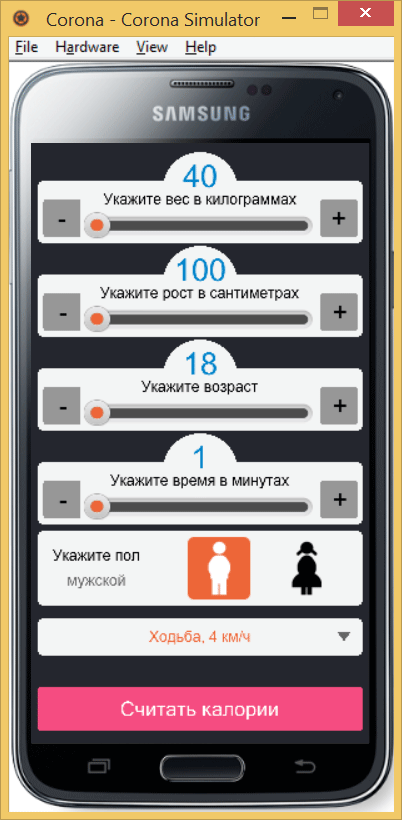
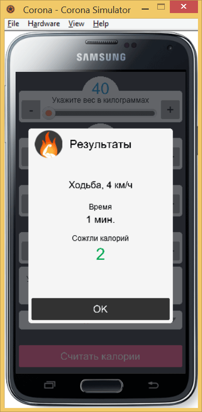

Всплывающее окно
В нашем приложении не хватает кнопки для подсчёта калорий и вывода всплывающего окна для отображения результатов. И кнопку и всплывающее окно мы уже делали ранее, так что это не представляет для нас какой-то сложности, опыт уже есть.
Вначале добавляем кнопку.
local buttonCalc = widget.newButton {
shape = 'roundedRect', raidus = 5,
width = w, height = '70',
left = 10, top = 870,
fillColor = { default={ 245/255, 77/255, 128/255 }, over={ 0, 149/255, 59/255 } },
labelColor = { default={ 1 }, over={ 1 } },
fontSize = 32, label = "Считать калории",
onPress = function(event)
composer.showOverlay("scenes.result", {
isModal = true,
effect = "fade",
time = 400,
});
end
}Цвет кнопки для её визуального выделения делаем розовой, при нажатии она меняет свой цвет на зелёный и вызывает сцену result.lua через функцию composer.showOverlay. Вот как выглядит наша законченная сцена.

Вид приложения с кнопкой
Осталось создать сам файл result.lua, который собирает введённые данные, считает калории по формуле Маффина-Джеора и отображает результат. Как и любой другой файл участвующий в сценах он имеет типовую структуру.
local composer = require("composer");
local widget = require("widget");
local scene = composer.newScene();
function scene:create(event)
local sceneGroup = self.view;
-- наш код
end
scene:addEventListener("create", scene);
return scene;Внутри у нас будет вывод заголовка с картинкой, кнопка ОК для закрытия всплывающего окна, вывод выбранной активности, времени и потраченное с учётом введённых данных число калорий. Вот что должно получиться в результате с заданными по умолчанию данными.

Отображение результатов в виде всплывающего окна
Полный код result.lua приведён ниже.
local composer = require("composer");
local widget = require("widget");
local scene = composer.newScene();
function scene:create(event)
local sceneGroup = self.view;
display.newRect(sceneGroup, display.contentCenterX, display.contentCenterY, display.contentWidth, display.contentHeight):setFillColor(37/255, 39/255, 46/255, 0.7);
display.newRoundedRect(sceneGroup, display.contentCenterX, 490, 460, 620, 10):setFillColor(244/255);
local okButton = widget.newButton {
shape = 'roundedRect',
radius = 5,
width = 440, height = 70,
left = 50, top = 720,
fillColor = { default={ 0.2 }, over={ 0, 149/255, 59/255 } },
labelColor = { default={ 1 }, over={ 1 } },
fontSize = 32,
label = "OK",
onPress = function(event)
composer.hideOverlay("fade", 400); -- закрываем сцену
end
}
sceneGroup:insert(okButton);
-- Считаем калории
------------------------------------------------------------------
function calculate()
local bmr;
if (sex == "мужской") then
bmr = (10*weight + 6.25*height - 5*age + 5); -- требуемое количество калорий в сутки для мужчин
elseif (sex == "женский") then
bmr = (10*weight + 6.25*height - 5*age - 161); -- требуемое количество калорий в сутки для женщин
end
v = bmr*activity_factor/24; -- считаем потраченные калории за час
res = math.round(v*time/60); -- потраченное количество калорий
return res;
end
-- Выводим результаты
------------------------------------------------------------------
display.newText(sceneGroup, "Результаты", display.contentCenterX, 230, native.systemFont, 36);
display.newImage(sceneGroup, "img/burn.png", 105, 230);
cal = calculate();
display.newText({
parent=sceneGroup,
text=activity_name,
x = display.contentCenterX, y = 360,
width = 420,
fontSize = 30,
align="center"
});
display.newText(sceneGroup, "Время", display.contentCenterX, 430, native.systemFont, 24);
display.newText(sceneGroup, time.." мин.", display.contentCenterX, 470, native.systemFont, 32);
display.newText(sceneGroup, "Сожгли калорий", display.contentCenterX, 530, native.systemFont, 24);
display.newText(sceneGroup, cal, display.contentCenterX, 580, native.systemFont, 52):setFillColor(0, 165/255, 80/255);
end
scene:addEventListener("create", scene);
return scene;Функция display.newText для вывода активности немного отличается от тех же функций используемых ниже. Строка может быть достаточно длинной, поэтому мы её ограничиваем по ширине добавляя параметр width и выравниваем по центру через параметр align.